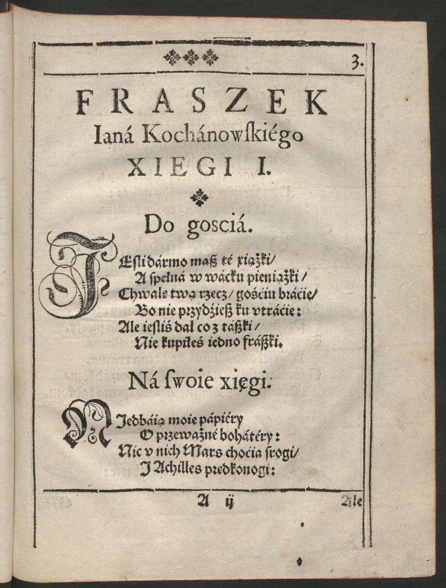
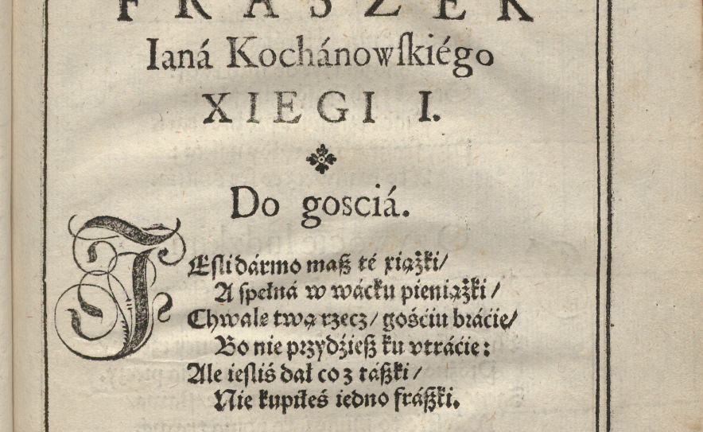
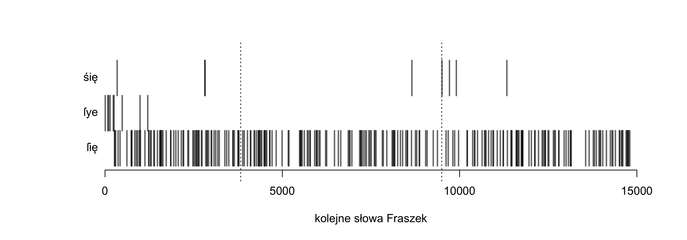
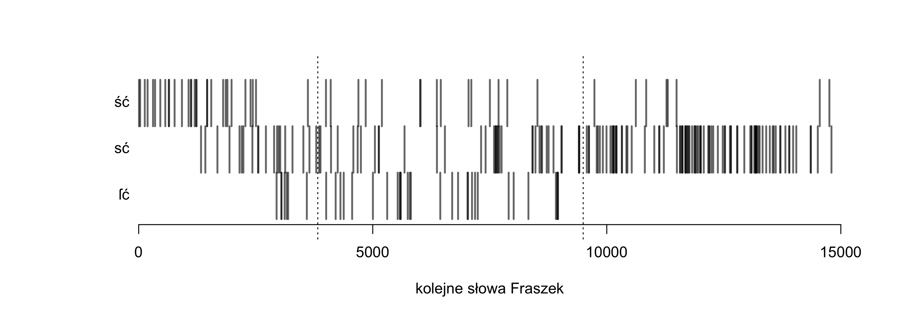
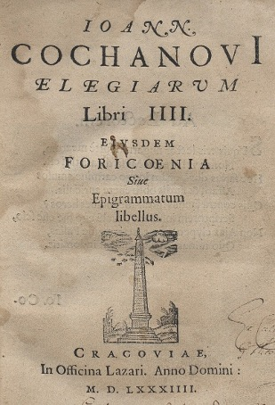
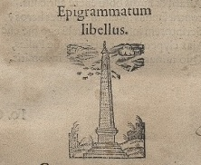

Instytut Języka Polskiego PAN | Uniwersytet Tartuski
22/05/2026
„Fraszki miały wyposażyć młodą literaturę w języku polskim w dzieło przypominające tematyką i strukturą Antologię grecką, bardzo wysoko cenioną […] przez humanistów” (C. Backvis, s. 94)
pierwotnie: Janusz Pelc, Paulina Buchwald-Pelcowa oraz Franciszek Pepłowski


Do gosciá.
IEſli dármo maſz té xiążki /
A ſpełná w wácku pieniążki /
Chwalę twą rzecz / gośćiu bráćie /
Bo nie przydźieſz ku vtráćie:
Ale ieſliś dał co z táſzki /
Nie kupiłeś iedno fráſzki.
Do gosciá.
IEſli dármo maſz té xiążki /
A ſpełná w wácku pieniążki /
Chwalę twą rzecz / gośćiu bráćie /
Bo nie przydźieſz ku vtráćie:
Ale ieſliś dał co z táſzki /
Nie kupiłeś iedno fráſzki.
<?xml version="1.0" encoding="UTF-8"?>
<teiCorpus xmlns:xi="http://www.w3.org/2001/XInclude" xmlns:nkjp="http://www.nkjp.pl/ns/1.0" xmlns="http://www.tei-c.org/ns/1.0">
<xi:include href="../../KorBa_manual_header.xml"/>
<TEI>
<xi:include href="header.xml"/>
<text xml:id="morph_text" xml:lang="pl">
<body xml:id="morph_body">
<p xml:id="morph_1-p" corresp="ann_segmentation.xml#segm_1-p">
<s xml:id="morph_1.29-s" corresp="ann_segmentation.xml#segm_1.29-s">
<seg xml:id="morph_1.1-seg" corresp="ann_segmentation.xml#segm_1.1-seg">
<fs type="morph">
<f name="orth">
<string>I</string>
</f>
<f name="translit">
<string>I</string>
</f>
<f name="interps">
<fs xml:id="morph_1.1.1-lex" type="lex">
<f name="base">
<string>I</string>
</f>
<f name="ctag">
<symbol value="romandig"/>
</f>
<f name="msd">
<symbol xml:id="morph_1.1.1.1-msd" value=""/>
</f>
</fs>
<fs xml:id="morph_1.1.2-lex" type="lex">
<f name="base">
<string>i</string>
</f>
<f name="ctag">
<symbol value="conj"/>
</f>
<f name="msd">
<symbol xml:id="morph_1.1.2.1-msd" value=""/>
</f>
</fs>
<fs xml:id="morph_1.1.3-lex" type="lex">
<f name="base">
<string>i</string>
</f>
<f name="ctag">
<symbol value="interj"/>
</f>
<f name="msd">
<symbol xml:id="morph_1.1.3.1-msd" value=""/>
</f>
</fs>
<fs xml:id="morph_1.1.4-lex" type="lex">
<f name="base">
<string>i</string>
</f>
<f name="ctag">
<symbol value="part"/>
</f>
<f name="msd">
<symbol xml:id="morph_1.1.4.1-msd" value=""/>
</f>
</fs>
<fs xml:id="morph_1.1.5-lex" type="lex">
<f name="base">
<string>i</string>
</f>
<f name="ctag">
<symbol value="romandig"/>
</f>
<f name="msd">
<symbol xml:id="morph_1.1.5.1-msd" value=""/>
</f>
</fs>
</f>
<f name="disamb">
<fs type="tool_report">
<f fVal="#morph_1.1.2.1-msd" name="choice"/>
<f name="interpretation">
<string>i:conj</string>
</f>
</fs>
</f>
</fs>
</seg>
<seg xml:id="morph_1.2-seg" corresp="ann_segmentation.xml#segm_1.2-seg">
<fs type="morph">SZEROKI (2) ai – sg A m: Widźiéć ſzéroki Dunay 52/6. pl N f: Władze ſzérokié 118/9.
SZEROKOWŁADNY (1) ai – pl A m: obiecháć … Tyránny ſzéroko włádné 129/7.
SZKLENICA cf ŚKLENICA.
1. SZKODA (3) praed – ſzkodá pusćić ſię ták zgołá nádźieie 85/11, ſzkodá Odiéżdżáć towárzyſzá 133/18; ſzkodáć y vrody/ Y téy łyśiny 60/8.
2. SZKODA (6) sb f – sg N: ZAmieſzkałem do ſtołu … Z czego … podkáłá mię ſzkodá 114/3. sg G: Pánie nieżycz mi ſzkody 47/9, my nieſczęsćia płáczem/ y ſwéy znácznéy ſzkody 83/12. sg A: owá ná ſwą ſzkodę ſuſzy bárzo koſći 58/2; iáko nagrody Od téy/ od któréy wſzytko/ chćiéć zá ſwoie ſzkody? 86/9. pl A: PRzy iednym ſczęſćiu dwie ſzkodźie bóg dáie 35/2.
Rádzę, Janie, daj pokój przedsięwzięciu swemu,
Bo bądź krótko, bądź długo, przedsię przydzie k temu,
Że się człowiek obaczy, á co mu dziś miło,
To mu będzie zá czásem wstyd w oczu mnożyło.
[ . . . . . . . . . . . . ]
Świádomeś słów łáskáwych i pięknéj postáwy,
Zdrádę widzisz – znajże więc, co przyjaciél práwy.
Á ty, o morska Wenus, chluśni z raz téj pániéj
Á pomści się wzdychánia i moich łzes ná niéj.
[ verte -> ]
Wieczna Myśli, któraś jest dáléj niż od wieká,
Jesli cię téż to rusza, co czásem człowieká,
Wierzę, że tám ná niebie masz mięsopust práwy,
Pátrząc ná rozmáité świátá tego spráwy.
Bo ledá co wyrzucisz, to my jáko dzieci
W táki tréter, że z sobą wyniesiem i śmieci.
Więc temu rękaw urwą, á ten czapkę stráci,
Drugi téj krotochwile i włosy przypłáci,
Ná koniec niefortuná álbo śmierć przypádnie,
To drugi, choćby nierad, czacz porzuci snádnie.
Pánie, godno li, niech tę rozkosz z tobą czuję,
Niech drudzy zá łby chodzą, á ja się dziwuję.
Nie bądź gościem u siebie – wiédz, co się w cię wleje,
Wedle tegóż swé spráwy miárkuj i nádzieje.
-> por. “Nie z słów, nie z oczu, nie z cery, nie z mniemania, nie z obcej powieści, ale co się w kogo wlewa, sprawy i postępki uważaj, inaczej się zawiedziesz” (A.M. Fredro, wyd. 1658)
-> por. “i nie czyni tego żaden, kto ma baczenie, áby z ubioru miał sędzić, á nie z spraw ábo z mowy, co się w człowieká wlewa” (GórnDworz L8)
PRzy iednym ſczęſćiu dwie ſzkodźie bóg dáie:
Głupi nie widźi / więc fortunie łáie.
Báczny co dobrze / to ná wirſch (!) wykłáda /
A co nie gmyśli to pilnie przyſiáda.
Przy jednym szczęściu dwie szkodzie Bóg dáje –
Głupi nie widzi, więc Fortunie łáje,
Báczny co dobrze, to ná wir
Á co nie gmyśli, to pilnie przysiáda.
Ná fortunę.
W Tym ſię fortuny rádźić nie potrzebá /
Choway ſwé dobrze / coć bóg życzył z niebá.
A kiedy będźieſz miał pogodę ná co /
Lápay iéy z przodku / z tyłu niémáſz zá co.
W tym się Fortuny rádzić nie potrzebá,
Chowaj swé dobrze, co-ć Bóg życzył z niebá.
Á kiedy będziesz miał pogodę ná co,
Łápaj jéj z przodku – z tyłu niémász zá co.
FORTUNA (6) n-pers f – sg N: Bo nie iuż wiecznie Fortuná ſłuży 49/7, łáſkáwie fortuná zemną poſtępuie 107/4. sg G: v fortuny ſobie Ziednáć niemogę/ áby głowie obie … ná … mchu leżáły 18/15, W Tym ſię fortuny rádźić nie potrzebá 35/7. sg D: Głupi nie widźi/ więc fortunie łáie 35/3. sg A: Ná fortunę 35/6.
FORTUNNY (1) ai – sg N m comp: Fortunnieyſzy był ięzyk 82/14.
[ . . . . . . . . ]
NIEFORTUNA (1) sb f – sg N: Ná koniec niefortuná/ álbo ſmierć przypádnie 40/5.
NIEFORTUNNY (1) ai – sg N m: Ledwé táki ná świećie niefortunny drugi 98/11.
AToli / pátrząc ná ſwé iáycá śilné /
Myśliłem rzeczy moim zdániem pilné.
Ieſli mię chce miéć ſczęsćié w tym nierządźie /
Niech mi da wedle proporciiéy mądźie.
Átoli pátrząc ná swé jájcá silné,
Myśliłem rzeczy moim zdániem pilné:
Jesli mię chce miéć Szczęścié w tym nierządzie,
Niech mi da wedle proporcyjéj mądzie.
1. SZCZĘŚCIE (4) n-pers n – sg N: TYlko ćię tu ná źiemię ſczęsćié vkazáło … Kryſztofie 17/19, Przeto … ſrogo Sczęſćié ſię ſtobą Obchodźi 48/14, Ieſli mię chce miéć ſczęsćié w tym nierządźie 58/15. sg D: ſczęsćiu ná złosć niebądź dłużéy w téy niewoli 108/8.
2. SZCZĘŚCIE (8) sb n – sg N: Tákli ty chceſz/ tákli to nieśie ſczęsćié moie 95/18. sg G: ſczęsćia ſwoiégo umié dobrze vżyć 20/11, znák ſczęſćia/ y oká miernégo 67/7, wſzytki narody Rzymowi ſłużyły/ Póki mu doſtawáło y ſczęsćia y śiły 82/11. sg A: Ia ſczęsćié ták ſzácuię/ że vććiwym cnotom Czynię czesć 104/5. sg I: Wſzyſcy piiáni … Kto ſczęsćiem/ á ia winem 121/17. sg L: PRzy iednym ſczęſćiu dwie ſzkodźie bóg dáie 35/2, żijmy … cnoćie/ Któréy céná iednáż ieſt w ſczęśćiu/ y w kłopoćie 132/18.
1. PAMIĘĆ (1) n-pers f – sg G: węzeł … Który pięknéy pámięći córki záwiązáły 87/18.
2. PAMIĘĆ (3) sb f – sg N: Pámięć twoiá w iéy ſercu záwżdy będźie trwáłá 70/7, PAmięć myśliſtwá twego/ Pietrze vćieſzony/ Stoię tu 119/6. sg L: niemam wpámięći/ Bych ćię … I przez sen kiedy widział 87/7.
[ . . . . . . . . . ]
1. ZAZDROŚĆ (3) n-pers f – sg N: Przeklęta zazdrość dźiwnie ſię fráſuie 15/4, z tych ſłów zazdrość myśl rozumié moię 19/2. sg L: O zazdrosci 15/1.
2. ZAZDROŚĆ (1) sb f – sg A: Ale mię ráczéy dáruy rymem pochwalonym/ Coby zazdrosć vczynić mógł … drzewom 93/15.
1. MIŁOŚĆ (22) n-pers f – sg N: Miłość mi dawno rádźiłá 6/11, Lecz mię miłość poimáłá 9/1, tym ſákiem miłosć iuż o płátné łowi 109/9, Táki vpad w mym ſercu miłosć vczyniłá 111/9. sg G: Do miłosci 35/16, 95/5, 96/1, 96/16, 109/16. sg A: KTo naprzód począł miłoſć dźiéćięćiem málowáć 81/9. sg I: Stoczyłem z miłośćią bitwę 6/20, PRóżno vćiéc/ próżno ſię przed miłośćią ſchronić 39/4. sg L: O Miłosci 39/3, 81/8. sg V: w ſerce/ miłosći proſzę/ nieudérzay 35/17, DLugóż maſz/ o miłosći/ fráſować (!) mé látá? 95/6, Ciebie ná pomoc wzywam/ ćiebie ô miłosći 96/6, IAm przegrał/ ia miłosći/ tyś plác otrzymáłá 109/17, iam zginął miłosći 110/6, ná ten czás/ miłosći/ zemnie korzysć twoiá 110/22. pl G: MAtko ſkrzydlátych miłosći 96/17, Przyzwól/ o mátko miłosći 98/1.
2. MIŁOŚĆ (24) sb f – sg N: iáko wieniec/ ták ſię miłość iéy źieleni 44/4, choćia wieniec zwiędnie/ miłosć ſię niezmieni 44/5, Niewiéſz iáko niewdźięczna miłoſć w ſercu boli 65/4, Smákowáłá mu miłosć/ niewiem iáko komu 73/9, nigdy prawdźiwa miłosć nieumiéra 86/15, by ſię miłosć z rozumem ſprzągáłá 98/17, miłosć ma ſwé obyczáie 98/20, miłosć/ á powagá nigdy ſię niezgodzą 109/7. sg G: Nagrobek I. M. p. Woiewodzinéy Lubelskiéy 122/15; do Iego mil. (!) P. W. Wilenskiego (!) 77/9; Miłośći prágną nie prágną tu złotá 9/18, nádźieie záś niemáſz wzaiemnéy miłoſći 58/1, niewiem bych żyć vmiał bez miłosći 75/20, 94/14, Wieléś … pozyſkał rádosći … z téy to niewdźięcznéy miłosći 108/2. sg A: boże … Day ráczéy miłość 61/18, Trudno nagle porzućić miłosć záſtárzáłą 108/9, GLód á praca miłosć káźi 109/1. sg I: BOgini/ która miłosćią ſzáfuieſz 75/11, On miłosćią ſámégo śiebie záślepiony 128/8. sg L: Lutnia … O miłośći śpiéwáć woli 5/8, Zacność w miłośći zánic/ fráſzká obyczáie 18/6, niewdźięcznosći Y ty nie lubiſz w vprzéyméy miłosći 75/14, 108/23.




Jest coś ná świecie, kto chce pilno wejźrzéć w rzeczy,
Z czego się dowcip wypléść nie może człowieczy.
Co rozumowi bárziéj, proszę cię, przystało,
Jeno żeby się złym źle, dobrym dobrze działo?
W czym ták częsta omyłká, że ten to sąd Boży
Niejednému sumnienié i serce zátrwoży.
Przedsię żyjmy pobożnie gwóli sáméj cnocie,
Któréj céná jednáż jest w szczęściu i w kłopocie.
Jest coś ná świecie, kto chce pilno wejźrzéć w rzeczy,
Z czego się dowcip wypléść nie może człowieczy.
Co rozumowi bárziéj, proszę cię, przystało,
Jeno żeby się złym źle, dobrym dobrze działo?
W czym ták częsta omyłká, że ten to sąd Boży
Niejednému sumnienié i serce zátrwoży?
Przedsię żyjmy pobożnie gwóli sáméj cnocie,
Któréj céná jednáż jest w szczęściu i w kłopocie.